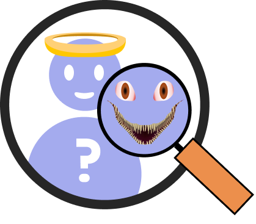

The act of cyber grooming involves an individual, typically an adult, establishing a friendly relationship with a minor through the internet, with the aim of developing an emotional bond and ultimately exploiting them for sexual purposes, sexual exploitation, or human trafficking.
Tips To Follow
Stay safe online and in real life
Never arrange to meet someone they only know online without a parent present.
Keep personal information private
Private details which could identify them in the real world – name, age, gender, phone number, home address, school name, and photographs – should only ever be shared with people they know.

Blocking Software
New apps and software can block, filter, and monitor online activity.
Note: Decide as a family if this is appropriate for your child based on their age, maturity, and privacy needs.
Reviewing apps, site, apps and games they use
Be aware of online platforms your child is interested in. Create your own account to understand their experience. Consider child-friendly networks as a stepping stone before they use platforms like Snapchat or Instagram.
Encourage children to talk to someone
If something makes your child worried or uncomfortable online their best course of action is always to talk to an adult they trust.
Safe Gaming
Multiplayer games with voice chat like Minecraft or Roblox, may include abusive language, harassment, and grooming. Children should learn how to report abuse and encourage them to talk to you about any concerns.

Know who their friends are
Remind them that even though people they’ve met online might feel like friends they may not be who they say they are.
Privacy settings
Review privacy settings together for their online safety. Default settings are often public, so make sure to adjust them.
{kind=link}